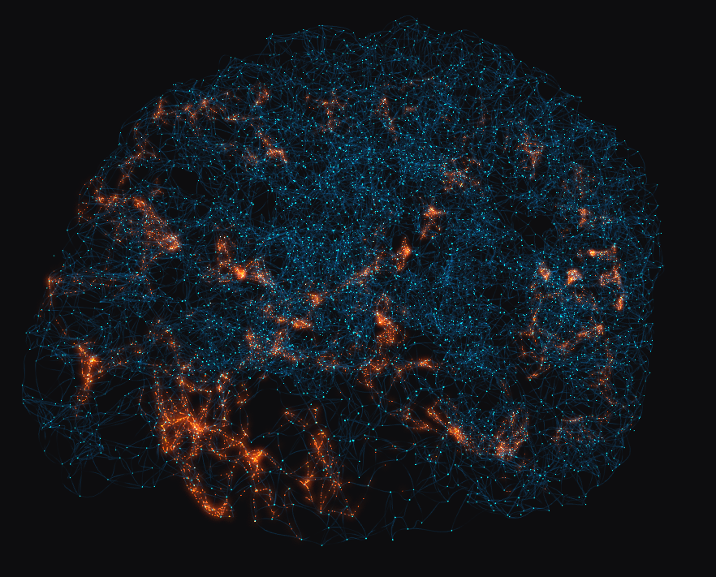

"the science and engineering of making intelligent machines"

Watson is an artificially intelligent computer system capable of answering questions posed in natural language.
100 billion neurons X 200 firings per second X 1000 connections per firing = 20 million billion calculations per second = 20 petaFLOPS

In machine learning, artificial neural networks (ANNs) are a family of statistical learning algorithms inspired by biological neural networks (the central nervous systems of animals, in particular the brain).
ANNs are generally presented as systems of interconnected "neurons" which can compute values from inputs, and are capable of machine learning as well as pattern recognition thanks to their adaptive nature.

Neural networks in JavaScript
// Color contrast training
var net = new brain.NeuralNetwork();
net.train([{
input: { r: 0, g: 0, b: 0 },
output: { white: 1 }
}, {
input: { r: 1, g: 1, b: 1 },
output: { black: 1 }
}]);
var output = net.run({
r: 0.2,
g: 0.2,
b: 0.2
});
// -> { white: 0.81, black: 0.18 }Complex touch gestures are hard to implement imperatively.
Let's see if we can train BrainJS to recognize them.


touchmove or mousemove event X/Y into a number between 0 and 1 (divide by canvas width and height)Online:
Books: